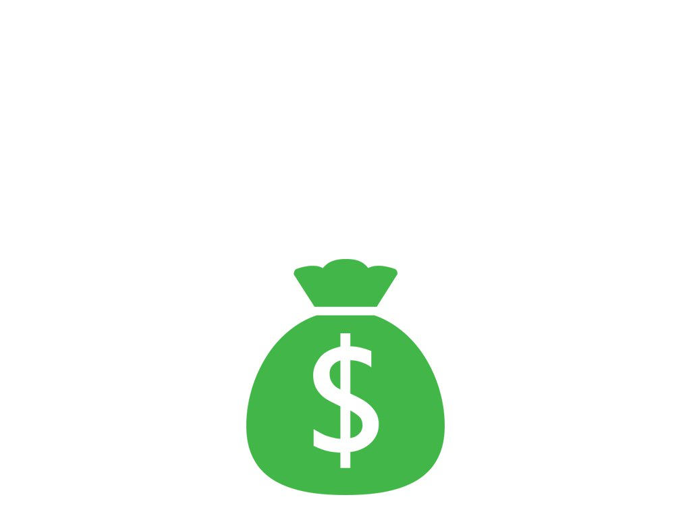
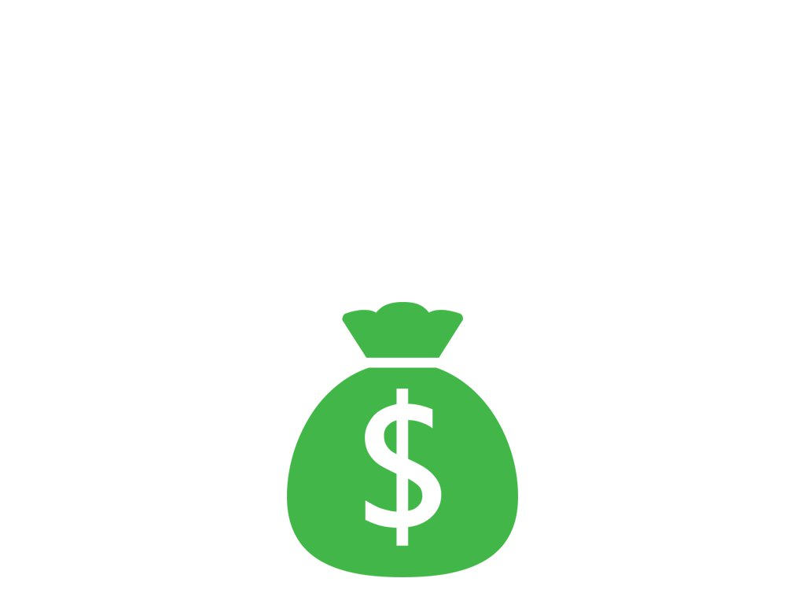

In this example we showcase the use of another kind of emitter a VectorArcRange, which emits particles in an arc range as its name suggests, there are various kinds of Vector, Scalar and Color generators that allow you to create different effects
 
